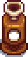

Auto-Grabber
| Auto-Grabber | |
 | |
| Automatically harvests from your animals each morning. Must be placed inside a coop or barn. | |
| Information | |
| Cost: |
|
| Unlocked at: | |
| Sold by: | Marnie's Ranch |
The Auto-Grabber automatically harvests milk from cows and goats, wool from sheep and Ostrich Eggs from Ostriches when placed in a Barn. It automatically harvests all products produced by Coop animals when placed in a coop. It can be purchased from Marnie's Ranch for  25,000g after obtaining Farming Level 10. Once unlocked, players may purchase as many Auto-Grabbers as they can afford. An Auto-Grabber may occasionally be found in treasure rooms in the Skull Cavern.
25,000g after obtaining Farming Level 10. Once unlocked, players may purchase as many Auto-Grabbers as they can afford. An Auto-Grabber may occasionally be found in treasure rooms in the Skull Cavern.
Each morning, the Auto-Grabber will automatically harvest all products in the Barn or Coop where it is placed. The player does not gain any Farming experience points or Mastery points for products harvested by an Auto-Grabber.
The Auto-Grabber acts like a chest, holding up to 36 harvested items (or stacks of harvested items). Items can be viewed or removed by right-clicking on the Auto-Grabber. Note that an empty Auto-Grabber cannot be opened.
Auto-Grabbers can be placed anywhere, but will not do anything unless placed inside a barn or coop. To remove an Auto-Grabber, it must be struck with a tool (repeated left-clicking or holding left-click will not work).
Auto-Grabbers cannot be sold or deconstructed.
Animal Friendship
The Auto-Grabber prevents the player from earning +5 friendship points for manually milking or shearing an animal. It will take longer for animals who have not reached the maximum of 5 hearts to do so, if placed in a barn with an Auto-Grabber. Keep in mind, animals will lose 5-10 friendship if not interacted with, meaning animals who aren't hand-pet, milked, or sheared, will lose friendship gradually, despite still being fed and let outside.
This effect can be cancelled out by the use of an Auto-Petter.
The day after reaching Farming Level 10, the player will receive a letter in the mail from Marnie. It is not necessary to read this letter to be able to purchase Auto-Grabbers; they can be purchased as soon as Farming level 10 is achieved.
| “ | “<Player>, I've got a new item in stock... It's called the "Auto-Grabber". This thing can milk your cows and goats, shear your sheep, gather eggs, and pluck your wooly rabbits... all on its own! It's considered a 'luxury item', so I'm charging 25,000g. -Marnie” |
History
| Tools | |
|---|---|
| Basic | Axes • Golden Scythe • Iridium Scythe • Hoes • Pans • Pickaxes • Scythe • Trash Cans • Watering Cans |
| Fishing | Training Rod • Bamboo Pole • Fiberglass Rod • Iridium Rod • Advanced Iridium Rod • Crab Pot |
| Other | Auto-Grabber • Auto-Petter • Hay Hopper • Heater • Incubator • Milk Pail • Ostrich Incubator • Shears |